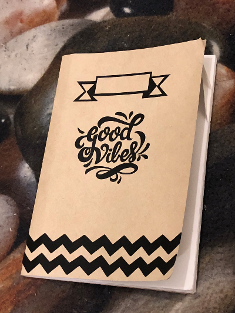
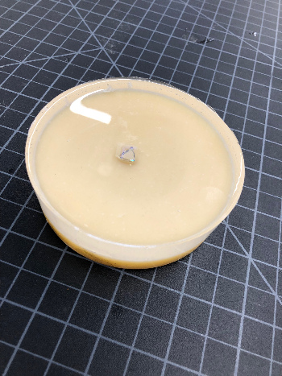

The Notebook
I really like decorating stuff especially with stickers.
When I got to know that this was our next assignment I was really excited.
My noteboook looks simple, but I really like the monochromatic simplicity of it.
We had take the size of the notebook and then make stickers that fit in that particular size.After My design was done, I had to export to the vinyl
printer to get it cut.
The cutting part was easy but weeding the not required elements from the required ones was hard
and time consuming. After the weeding was done it was placed on a special type of role that helped it to be applied on
the notebook itself.

The label:This sticker was created so that as any other notebook I could write my name inside of it.
The good vibes sticker: This sticker was created so that whenever I feel like writing in this notebook, I write with a smile on my face and good thoughts.
The Pattern: This was created because I did not want the front to look empty and boring.
The Chocolate Mold
For the chocolate mold I used my 3D OBJECT-"the cupcake" to be milled out of the wax. After the mold is put into it, I will be attaching more pictures.

Molding A Coaster
For this assignment we were given an empty container, in which we had to put the thoroughly mixed urethane and expoxy.
we also had to put an object inside the coaster; My object was a piece of gem which had fallen apart from my hairclip.
